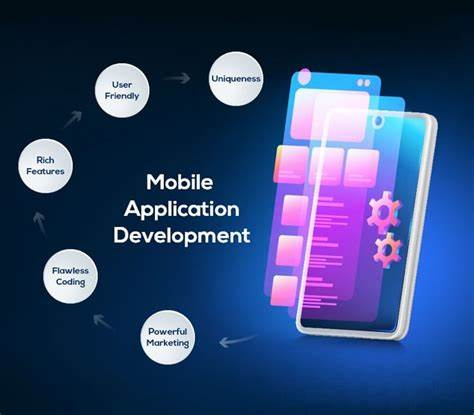

What is programing?
Programming refers to a technological process for telling a computer which tasks to perform in order to solve problems. You can think of programming as a collaboration between humans and computers, in which humans create instructions for a computer to follow (code) in a language computers can understand. Programming enables so many things in our lives, such as:
There are 2 types of programming
1st is mobile development
What is mobile application development? Mobile application development is the process of making software for smartphones, tablets and digital assistants, most commonly for the Android and iOS operating systems. The software can be preinstalled on the device, downloaded from a mobile app store or accessed through a mobile web browser. The programming and markup languages used for this kind of software development include Java, Swift, C# and HTML5. Mobile app development is rapidly growing. From retail, telecommunications and e-commerce to insurance, healthcare and government, organizations across industries must meet user expectations for real-time, convenient ways to conduct transactions and access information.
2nd is web development
There are 2 main types of web development: front-end, back-end and full-stack. Front-end development is responsible for the aspects of a website that users see and interact with: the user interface (UI). Front-end developers are well-versed in HTML, CSS and JavaScript, often working closely with design and UX teams to capture both the intended look and feel of the site, while also creating a quality user experience across multiple device types. Back-end development is responsible for all the aspects of a website that users do not see. This is also known as server-side development because back-end developers focus primarily on the behind-the-scenes logic, APIs and database interactions that power the site. and web dev is the creation, biulding and maintaining of websites and it includes aspects like web design and web publishing and web programing